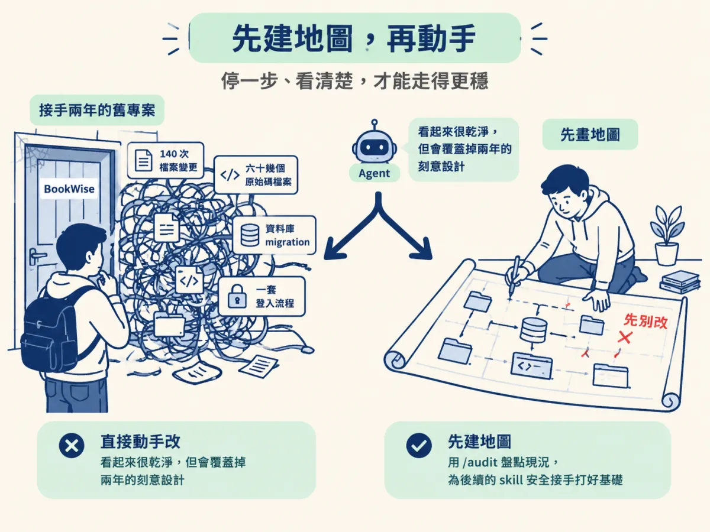
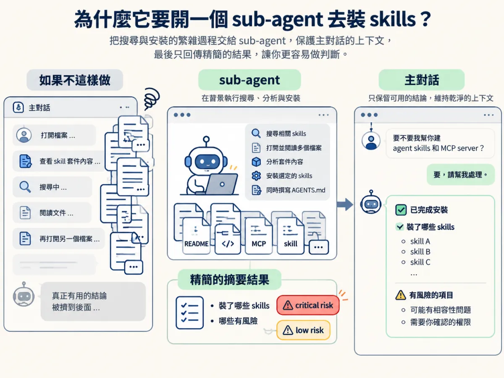
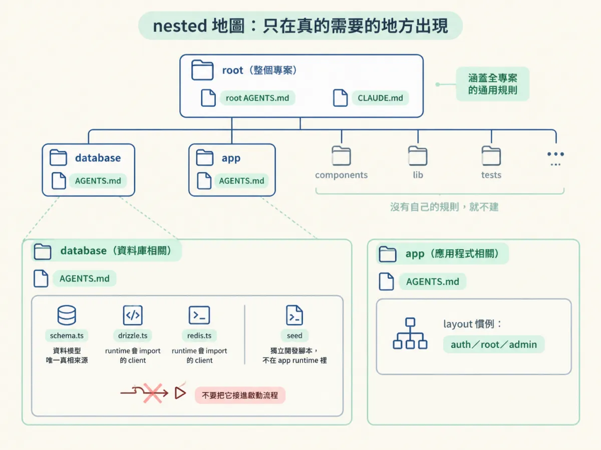
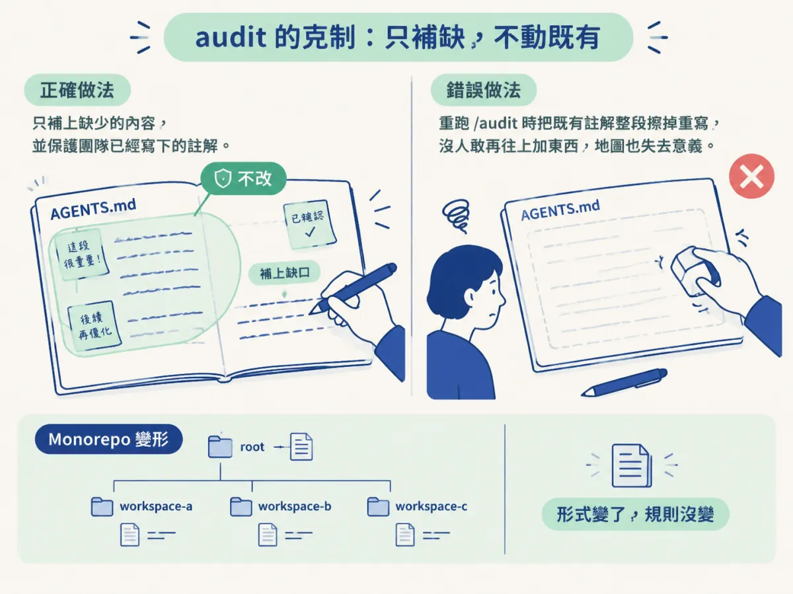

認出 /audit 在一個已成熟 repo 上為什麼走整庫掃描、root 與 nested 地圖各放什麼，以及它怎麼用 sub-agent 與 skills／MCP 建議，讓主對話只留下有用的結論。
想像這個畫面：同事離職前把一個大學圖書館系統交給你，說「還書功能還沒做，下週要上」。你打開 repo，看到 140 次檔案變更、六十幾個原始碼檔案、資料庫 migration、還有一套已經在跑的登入流程。你連「這專案怎麼啟動」都還不確定，更別說知道哪個資料夾是正式在用的、哪個是實驗留下的。
這時候最危險的動作，就是直接把需求貼給 agent，叫它開始改。它會很樂意照做，而且改出來的程式碼看起來很乾淨；問題是它跟你一樣不知道這個專案為什麼長成這樣，於是它會用「一般來說這樣最好」的方式，覆蓋掉「這個團隊兩年來刻意這樣做」的細節。
所以第一步不是改，是建地圖。這節要看的是 /audit 在這種已經成熟的專案上實際怎麼跑、產出什麼，以及那些產出為什麼能讓後面的 skill 安全接手。

你在新專案上看過 /audit 的行為：它會問你喜歡用什麼慣例、想怎麼組織專案，因為那時候沒有東西可以觀察，只能問人。但這次不同。課程的示範專案叫 BookWise，是一個兩年多前寫的大學圖書館應用，當時 agents.md 這種東西還不存在，整個專案是純手工寫出來的。
/audit 一進場，先看程式碼、git 歷史和專案裡既有的檔案。當它判斷這是一個已有 62 個以上原始碼檔案、有資料庫 migration、有真實 auth 流程的專案，它就跳到第二階段：整庫掃描。差別在這裡：新專案要靠問答補齊不存在的資訊，成熟專案則是靠閱讀把已經存在的資訊挖出來。前者你回答的是「你想要什麼」，後者它回答的是「這裡實際上是什麼」。
它會一路讀重要檔案，讀到資訊夠了，才開始寫 AGENTS.md。這個順序很重要：不是先開一個空檔案再往裡面填，而是先有足夠證據，才落筆。
在寫文件之前，/audit 還會做兩件事：檢查這個專案適不適合搭配 agent skills 與 MCP server，以及快速翻一下 components、forms 和幾個檔案，確認專案真正的慣例。
示範裡它問了一句：「要不要我幫你建 agent skills 和 MCP server？」你回答要，它就開一個 sub-agent 去搜尋，自己同時在背景把 AGENTS.md 寫完；搜尋結果回來後，它再安裝那些 skills。它這樣做是為了保護主對話的上下文，不是為了看起來很忙。如果它在同一個對話裡逐一打開幾十個檔案、看每個 skill 套件的內容，主對話很快就被這些過程塞滿，真正有用的結論反而被擠到後面。交給 sub-agent 之後，回來的只有「裝了哪些、哪些有風險」這種可以拿來判斷的結果。

這段也示範了一個成熟的判斷分工。它發現 Auth.js 的 skill 套件內容看起來只是一般文件，但其中一個掃描器把它標成 critical risk，另一個標成 low risk。它沒有替你選，而是把兩個不一致的判斷攤在你面前，讓你決定。你最後把它移除了。
最後它整理出的 stack 是 Next.js、Drizzle ORM、PostgreSQL／Neon、Tailwind、Zod，登入用 Auth.js／NextAuth v5，另外用了 Upstash；建議安裝的 MCP server 則是 Neon、Upstash、ImageKit。這些名字不重要，重要的是它們全部來自掃描到的真實程式碼與依賴，而不是它對「一個圖書館系統應該長怎樣」的想像。
/audit 寫進 root AGENTS.md 的內容，可以用一句話描述：一個資深工程師在你第一天坐下來時，會先講給你的那些事。它包含語言與 runtime、框架與版本、關鍵依賴、package manager、build approach、每天要跑的指令、spec 存在哪裡，以及這個程式庫遵循的規則。另外還會建立一個 CLAUDE.md 指標檔，讓不同工具的 agent 都找得到同一份地圖。
為什麼是這些項目？因為每一個新 prompt 進來時，agent 都會先讀這份檔案。它讀不到原始作者的記憶，只能讀你留給它的東西。這份檔案等於把「大家都知道但沒寫下來」的共識，變成每次對話都會自動載入的前置知識。
下面這個骨架是依 demo 描述整理的示意，不是原始檔案的逐字內容，重點是看它裝了哪幾類資訊：
# AGENTS.md（root，示意）
## Stack
Next.js（含版本）、Drizzle ORM、Neon Postgres、Tailwind、Zod、Auth.js
## Commands
安裝依賴、啟動開發伺服器、跑測試、執行 migration 的實際指令
## Conventions
這個 repo 一貫的錯誤處理方式、檔案命名與資料存取寫法
## Specs
規格文件放在哪個資料夾、命名規則怎麼看
## Skills / MCP
已安裝的 agent skills，以及建議連接的 MCP server要注意的是，這份檔案不是 README。README 寫給人看，解釋這個產品在做什麼；AGENTS.md 寫給 agent 看，回答「我要動這個 repo 時，必須先知道什麼才不會弄壞它」。兩者重疊的地方不多。
寫完 root 之後，/audit 做了一件在示範裡第一次出現的事：它在某些子資料夾裡再放一份 AGENTS.md。這份檔案的位置就是它的作用範圍：agent 只有在處理那個區域時才會讀它。
但關鍵在下一句：它不會為每個資料夾都建一份。只有當那個區域真的有自己的規則時才建，判斷條件包括：慣例和其他地方不同、有自己的指令、接了外部服務，或有在地的風險。示範裡它只建了兩份，database 和 app。
database 那份值得細看，因為它記錄的正是「不講就會踩到」的東西：Drizzle ORM schema、Neon Postgres 連線、Redis client，還有一個 devseed 腳本。它指出 schema.ts 是資料模型的唯一真相來源；drizzle.ts 與 redis.ts 是 runtime 會 import 的 client；seed 則是獨立的開發腳本，不屬於 app runtime。資料模型裡有 users、books、borrow records，並用 Postgres enum 表達 role、status 與 borrow status。
這幾句話的價值，在於它把「這個檔案的定位」講清楚了。一個新人看到 seed.ts，很可能以為它是啟動流程的一部分，於是改動它、或把它接進 app；地圖直接告訴你它不是。這就是為什麼這段資訊要放在 database/ 而不是 root：它只在你要動資料庫時才相關。

app 那份則記錄了 layouts 的慣例：auth layout 管登入與註冊、還有 root layout、admin layout 與其他頁面。這一帶的規則和其他地方不同，所以值得獨立一份。
| 地圖層級 | 放在哪 | 何時被讀到 | 示範裡放了什麼 |
|---|---|---|---|
| root | 專案根目錄的 AGENTS.md，加一個 CLAUDE.md 指標 | 每個新 prompt 一開始 | stack、每日指令、慣例、spec 位置、已裝的 skills |
| nested | 有自己規則的子資料夾 | 只有在處理那個區域時 | database：schema 真相來源、client 與 seed 的定位；app：layout 慣例 |
看到 nested 檔案，很容易下一個結論：「那我是不是應該幫每個資料夾都寫一份，這樣 agent 什麼都知道？」這正好相反。如果每個資料夾都有一份，那就等於沒有優先順序：agent 每次都要讀一堆彼此重複的規則，真正重要的警告反而被稀釋。
反過來說，也不是「nested 檔案越高階越好」。判斷的依據不是資料夾大小，而是那個區域有沒有自己的規則。像示範裡的 database，它的規則不是「資料庫相關的程式碼放這裡」這種廢話，而是「schema.ts 是唯一真相來源」、「seed.ts 不在 runtime 裡」。這種句子別的地方寫不出來，才值得獨立一份。
課程最後把這套行為背後的規則講得很白：它讀已經存在的東西，只補上缺少的，並且保護人們已經寫下的內容。這個限制聽起來很保守，但它其實是整個團隊願意信任地圖的前提。如果每次重跑 /audit 都會把你昨天手寫的註解重寫一遍，就沒有人敢在上面加東西，地圖也就失去意義。

同一個 skill 也會依專案形狀調整。遇到 monorepo，它會寫一份很短的 root 檔案，然後為每個 workspace 各寫一份。形式變了，規則沒變：先讀現況，只補缺口，不動既有。
在已成熟的 repo 上，/audit不問你慣例，而是掃描整個程式庫，從程式碼、歷史與既有檔案推出結論。它寫一份 rootAGENTS.md（加上CLAUDE.md指標），記錄 stack、每日指令、慣例與風險；只在真正有自己規則的區域放 nested 檔案，示範裡是database與app。過程中用 sub-agent 找 skills 與 MCP，讓主對話只留下可判斷的結果。它只補缺、不改既有，這是地圖能被信任的原因。
下一步要處理的是這張地圖的地位：它是證據，不是真相。你必須在動手前讀它、跑它、挑它，才算真的接手了這個專案。